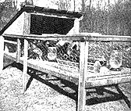

This outside sun porch is a convenient place to transfer 8 to 10 week old broilers and raise them to 3 to 7 pound fryers or roasters. Raising in confinement makes for tenderness and rapid weight gains. Sanitary floor is 7/8"" wire mesh. Allow one square foot of floor space per bird at 10 weeks - two square feet at 20 weeks.